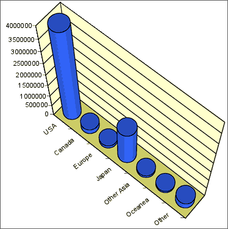
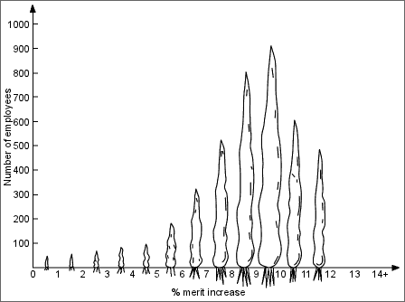
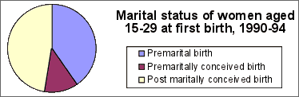
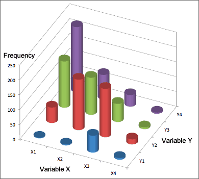

If you don't want to print now,
Tables from spreadsheets
Never publish tables in which all values are boxed (the default format for tables produced by many spreadsheets). Consider using a bold typeface for headings or using extra white space to separate rows and columns as an alternative to lines.
| Reason | No. | % |
| Needle/Surg. Injuries | 279 | 0.2 |
| Rape | 1502 | 0.8 |
| TB | 1564 | 0.9 |
| STI | 2745 | 1.5 |
| Med Exam | 4717 | 2.6 |
| Clinical Suspicion | 15387 | 8.5 |
| PMTCT | 45590 | 25.0 |
| VCT | 102443 | 56.3 |
| Other | 7825 | 4.3 |
The table below presents the data more effectively.
| Reason | No. | % |
| Needle/Surg. Injuries | 279 | .2 |
| Rape | 1,502 | .8 |
| TB | 1,564 | .9 |
| STI | 2,745 | 1.5 |
| Med Exam | 4,717 | 2.6 |
| Clinical Suspicion | 15,387 | 8.5 |
| PMTCT (pregnancy) | 45,590 | 25.0 |
| VCT (voluntary) | 102,443 | 56.3 |
| Other | 7,825 | 4.3 |
Large tables
In large tables, it can be difficult to read across rows. To help the eye to match values on the same line, hairlines can be drawn between occasional rows, or some rows can be printed on a very light grey background.
Layout
Think carefully about how to arrange the rows and columns. Values that we want to compare should be close to each other, ideally in a column. Judicious use of white space can help to show the structure of complex tables.
The layout above has little structure. The table below contains the same information but is easier to understand.

Annotation
When a table is included in a report, the main information that can be gained from the table should also be summarised in the body of the report in words.
Do not simply repeat the values in the table. The annotation should summarise and interpret.
Signal and noise
The useful information in a graphical or tabular display of data is called its signal. Parts of the display that do not contain information that can be usefully interpreted are called noise. We can distinguish:
Noise make it harder to detect the signal in a display and should be avoided.
Significant digits
Many tables contain values that are reported with more significant digits than necessary. Usually the pattern of values in a table can be understood from only their first 2 or 3 digits — the remaining digits are data noise.

Reducing the number of significant digits and rearranging the columns makes the information easier to understand.

Percentages and proportions
It is often easier to understand proportions (or percentages) than raw counts. This is particularly important for comparing groups of individuals. The table below shows the origin and 'lifestage' of tourists (in thousands) arriving in Hawaii in 2005.
| US West | US East | Japan | Canada | Europe | |
| Wedding/honeymoon | 103.1 | 110.0 | 192.7 | 8.0 | 131.5 |
| Family (with children) | 667.1 | 297.1 | 485.6 | 44.5 | 94.4 |
| Young (18-34) | 403.3 | 243.1 | 229.1 | 38.8 | 210.1 |
| Middle aged (35-54) | 955.2 | 634.7 | 308.0 | 75.1 | 374.2 |
| Seniors (55+) | 903.7 | 643.5 | 303.5 | 82.3 | 314.6 |
| Total | 3,032.5 | 1,929.3 | 1,517.4 | 248.6 | 1,123.7 |
The information is easier to understand as percentages within each country of origin. Scanning across rows in the table below, the highlighted percentages stand out as 'unusual'.
| US West | US East | Japan | Canada | Europe | |
| Wedding/honeymoon | 3.4 | 5.7 | 12.7 | 3.2 | 11.7 |
| Family (with children) | 22.0 | 15.4 | 32.0 | 17.9 | 8.4 |
| Young (18-34) | 13.3 | 12.6 | 15.1 | 15.6 | 18.7 |
| Middle aged (35-54) | 31.5 | 32.9 | 20.3 | 30.2 | 33.3 |
| Seniors (55+) | 29.8 | 33.3 | 20.0 | 33.1 | 28.0 |
| Total | 100.0 | 100.0 | 100.0 | 100.0 | 100.0 |
Ratios
It is sometimes better to divide values by some measure of 'size' before analysis or display.
Comparing values down columns
It is easiest to compare values if they are close together in a table. The layout and use of white space should be used to encourage comparison of related values.
In particular, it is easier to compare values down columns than across rows — their most significant digits are closer — so carefully consider whether to swap the rows and columns of a table.
Order for the rows of a table
In many tables, the rows are ordered alphabetically by their row names, but it is usually better to reorder them in another meaningful way.
If there is no better ordering, sort the rows into decreasing order of the values in the column of most interest.
Tourist arrivals in South Africa
The following table was published as part of a report on tourism in South Africa. It describes the origin of tourist arrivals in 2004 and the amounts that they spent in South Africa (excluding capital expenditure).

This table can be improved by removing grid lines, decreasing the number of significant digits, and reordering the countries within each region.

Bar charts
In a bar chart, each category is represented by a bar whose length is proportional to its value. Very faint gridlines behind the bars can help to read off values.
Vertical bars are often used for small tables, but if there are many categories or if the category names are long, a horizontally oriented bar chart is usually clearer.
Examples
Ordering
Sometimes the categories in a table or bar chart have a natural ordering and the categories should be kept in this order. However when there is no natural ordering of the categories, the order of the categories in a table or bar chart is arbitrary.
Alphabetical ordering of the categories is rarely best.
It is often useful to arrange the categories in decreasing order of their values. This type of ordered bar chart is often called a Pareto diagram.
However if there is a category 'Other' or 'Unknown', then it should be kept at the end, even if its value is larger than others.
Example

Quantities and zeros
Most tables contain values that are quantities — values in which zero has special meaning, so the value axis should usually start at zero.
Bar lengths should be proportional to the values.
However if all values are similar, all bars would visually seem to be the same if a bar chart was drawn in this way, so the value axis must be drawn starting at a non-zero value. It is then important to clearly indicate that the scale no longer starts at zero with zig-zags at the bottom of the axis and/or bars.

Negative values
In some data sets, the quantities that can be negative. They can be represented on a bar chart with bars extending on both sides of zero.

Chartjunk
 |
Bar charts can be very simple and need not take up much space in reports. Avoid the temptation to embellish them 'artistically' to make them more visually appealing. These additions are collectively called chartjunk. |
Chartjunk adds 'noise' to a bar chart and makes it harder to read the real information that is contains. Rather than adding chartjunk, draw it small or replace it with a frequency table.
A common form of chartjunk arises when each bar is drawn as a 3-dimensional object. When the resulting 3-dimensional picture is rotated, it often becomes harder to compare the heights of bars and to read off values from the axes. In particular, perspective views should be avoided.

Replacing bars with objects
A more serious problem arises when the rectangular bars in a barchart are replaced with pictures of objects. This often visually mis-represents the proportions in the different categories — the visual importance of a bar is determined by its area or volume, not its height.

Simple bars would be clearer in the following diagram, but using a stack of small pictures does not mislead as badly.

Chartjunk
Resist the temptation to 'enhance' pie charts with chartjunk. In particular, 3-dimensional pie charts can over-emphasise the categories closest to the viewer.

In general, it is better to draw a standard pie chart smaller rather than embellishing it with chartjunk.

Pictographs
2- and 3-dimensional pictures should not replace the bars on a bar chart since the categories with the biggest pictures appear disproportionately large. A similar problem often arises when a picture is split into segments to form a stacked bar chart.
Avoid slicing a picture to form a stacked bar chart.
The following pictograph is a particularly misleading example — it exaggerates the proportion of tax and GST.

Grouped data are often displayed graphically with a separate bar chart for each group.
Example
The following table shows average monthly rainfall in three cities in Thailand.
| Jan | Feb | Mar | Apr | May | Jun | Jul | Aug | Sep | Oct | Nov | Dec | Year | |
|---|---|---|---|---|---|---|---|---|---|---|---|---|---|
| Phuket | 23.3 | 25.8 | 59.0 | 137.8 | 269.8 | 236.9 | 284.1 | 282.8 | 386.5 | 295.9 | 173.7 | 61.9 | 2,237.5 |
| Bangkok | 9.0 | 30.0 | 29.0 | 65.0 | 220.0 | 149.0 | 155.0 | 197.0 | 344.0 | 242.0 | 48.0 | 10.0 | 1,498.0 |
| Chiang Mai | 7.7 | 9.2 | 19.2 | 54.1 | 153.0 | 117.3 | 153.2 | 224.6 | 200.2 | 118.1 | 51.3 | 18.3 | 1,126.2 |
The distribution of rainfall throughout the year can be compared with the bar charts below.

Clustering bars in 2-dimensional bar chart
Rather than using a 3-dimensional bar chart, it is usually easier to assess the relationships between two variables from 2-dimensional bar charts. The bars can be clustered by either variable and it is often informative to examine both of these displays.

Stacking the bars
The bars for each group in a bar chart can be stacked to help make comparisons between the groups. Stacked bar charts are particularly effective when the categorical variable is ordinal (has categories that can be meaningfully ordered).
The diagram below is a stacked bar chart showing the results from a questionnaire in New Zealand about women's ratings of their own body size. The 246 women all had similar body-mass index and were a little lighter than average for their height.

It is clear from this bar chart that there were more Europeans in the study than in the other ethnic groups. By stacking the proportions within groups, this information is lost but it is easier to see that a bigger proportion of Europeans believe they are overweight than the other groups.

Binary variables
When the variable of interest can only take two possible values, it is called a binary variable. If the proportions in each group for one of these values are small, the bars for this category can be shown with an expanded vertical scale — no information is lost since the proportions in the other category are one minus them.

Graphical display in a bar chart
If we do not want to classify the variables in a contingency table as a response and explanatory variable, the data can be displayed with a 3-dimensional bar chart.

Three-dimensional bar charts are 'interesting' but there are more informative ways to display the data.
Chartjunk and perspective displays
Beware of adding chartjunk and perspective viewpoints to the display — they just make it harder to understand the data.

Groups of 'individuals'
If the' individuals' that are represented by crosses on a scatterplot can often be split into different groups, the crosses can be drawn with different symbols or in different colours to represent the group membership.
For example, the diagram below shows the birth rates and life expectancies of all countries in the world, split into 3 groups by their GDP per capita.

Replacing crosses with circles
If the individuals displayed in a scatterplot have different 'sizes', then the crosses can be replaced by circles whose areas are proportional to their sizes.
For example, the diagram below shows the birth rates and life expectancies of all countries in Africa. The circle areas are proportional to the populations of the countries.
Dynamic scatterplots
Changes over time can be shown on a computer if any graphical display is accompanied by a slider that can dynamically update the display for the data sets in different years. This cannot be demonstrated in a static diagram but a flavour is given below to show the relationship between birth rate and life expectancy in African countries between 1955 and 2005, with circle area proportional to the populations of the countries.

Adding other information to maps
Simple displays such as pie or bar charts can be superimposed on the regions of a map, but they must be simple to be effective.
The bar charts below show clearly that a larger proportion of companies in New Zealand were foreign-owned in Auckland and Wellington than those in the rest of the country. The increase in companies based in Auckland rather than Wellington and the increasing proportion of foreign-owned companies in Auckland in 1997 are evident.

Maps with area proportional to population
Maps of countries or regions are sometimes distorted to make the map areas allocated to different countries proportional to their population instead of their land area. An attempt is made to retain the relative positions of the countries (and often their shapes). For example,

Distorting maps to display other information
Maps can be similarly distorted to make the areas of countries (or regions) proportional to many other measurements. This should only be done for quantities that are 'part of a whole'. If two areas are combined, the value for the combined area should be the sum of their values.
Rainfall volume
The map below shows where the world's rainfall occurs. Observe in particular the high rainfall in Brazil and Indonesia.

Data presentation
Graphs, tables and diagrams are used by statisticians to help extract information from data, but they are equally important as a way of reporting the resulting information to others.

Reports use tables, graphs and text to present information and several principles for effective presentation of data were described in earlier sections. Textual annotation should be considered to point out important features but should interpret but not simply repeat information.
Excellence in statistical graphics consists of complex ideas communicated with clarity, precision and efficiency.
Innovative graphics
Although basic graphical displays are often effective, there is also scope to devise novel simple ways to effectively display specific types of data. These may link together several simple graphs in ways that encourage the eye to identify patterns and relationships, or they may be completely original.
Always spend time critically examining any reports that you write for their clarity, precision and efficiency.
Purpose of publication
Publication medium
All information used to be published in black and white on paper, but colour and electronic delivery are now more common. Colour in particular makes it much easier to present information clearly, especially in graphs.
With computers and internet connections becoming more common, a well-designed web site is becoming a very powerful and flexible way to present information.
There is no perfect publication medium, but a well-designed web site should be considered.
Selecting information to display
A large volume of data is often collected during any project, so any report must be very selective about the information that is displayed.
The report should summarise the most important features of the data.
This is similar to the distinction that engineers make between the signal that is being communicated between two locations and the noise that is added by the communications channel. The noise degrades the signal and, in the worst cases, can make the signal difficult to detect.
Signal = information you want
Noise = 'random' modification to the signal
An important goal of data presentation is to extract the 'signal' from a data set and clearly display it without the 'noise' of the less important detail in the data.
Prune out unnecessary detail
Many reports are filled with bar charts, pie charts, histograms, scatterplots and a variety of other plots, just because the researcher produced them when exploring the data! Graphics, tables and text should only be included if they add new and interesting information about the data.
Before producing a report or other publication, it is important to first identify the most important information that you want to convey.
Reports present information in three main ways — tables, graphs and text.
Textual descriptions
Graphical and tabular displays invariably convey information much more clearly and in a much more immediate and memorable way than textual descriptions. However graphics and tables must be integrated into a report. The text should be used to summarise and interpret information in tables and graphs, but not simply repeat in words information that has already been clearly presented in another form.
Tables
Tabular displays are often effective summaries of very simple data sets. For example, the following table describes the New Zealand defence force personnel in 2005 as concisely as any graphical display.
| Count | Percentage | |
|---|---|---|
| Navy | 1,910 | 22% |
| Army | 4,438 | 52% |
| Air force | 2,266 | 26% |
| Total | 8,614 | 100% |
Large tables should usually be summarised briefly in the body of a report with the full table relegated to an appendix or made available for download from a web site.
Graphical displays
Bar charts, pie charts, histograms, maps and scatter plots are particularly effective ways to convey information since the human eye can readily detect, interpret and retain patterns. There are many further ways to graphically display information.
Good statistical graphics communicates information with clarity, precision and efficiency.
Annotation
A good graphical or tabular display can often ‘speak for itself’ — its message is immediately clear without further explanation. However it often helps to write comments on a diagram (a) to point out important features and (b) to add extra information such as labels that give extra insight.
In the diagram below, the added text and grey lines on the scatterplot help to highlight the periodicity of properties of chemical elements.

Multiple simple graphs
It is easy to confuse the reader by incorporating too much information in a graphic, but simple graphics can sometimes be combined in rich ways that encourage the reader to investigate the relationships between different measurements.
When planning any such diagram, critically consider whether it may be too complex to be easily understood by the intended audience.
New Zealand wool exports in 1879
The following diagram presents information about wool production and exports in New Zealand in 1879. It effectively shows:
The eye is encouraged to investigate the relationship between the location of sheep farms, the climate and ports.

Other types of diagram
We have only described a few general-purpose graphical methods for describing data. In general, publications that are intended for a wide readership should avoid more complex graphics, but other ways to present data graphically are useful for some data sets.
Always use the simplest graphical method that will convey the information that you want.
Road accidents in Israel
The diagram below is called a spie chart and is based on a circle that shows a standard pie chart of the age and sex distribution in Israel.

The darker segments describe the ages of all road accident casualties in Israel in 2002; they use the same slices as for the overall population distribution with their radius adjusted to make the areas of the slices in proportion to the number of casualties in that age group and gender.
The 'bulges' show age groups where there are a disproportionate number of casualties.
Take care with interpretation of the graph. The bulge in male casualties aged 15-54 could be caused by more reckless drivers of this age, but they probably also spend more time driving.
An innovative graphic can sometime work well for a particular type of data. If your data are of a non-standard type, you may be able to devise a novel way to clearly display them.
Napoleon's invasion of Russia
The diagram below was published by Charles Joseph Minard in 1861.

The diagram portrays Napoleon’s disastrous campaign of 1812-1813 when his army invaded Russia. After laying siege to Moscow, Napoleon was forced to retreat by the harshness of the Russian winter. The width of the band describes the number of surviving soldiers during the invasion and retreat. It effectively illustrates where the soldiers died during the campaign. The temperature graph at the bottom shows the temperatures during the retreat.